7 月，WAIC 世界人工智能大会。
每年抱怨高温，每年吐槽 OpenAI、Anthropic 和 Gemini 都不参加还能称得上「世界」人工智能大会吗，每年如期来到世博展览馆。
因为，要「在场」。
2024 年，「百模大战」正酣。
除了卷价格的大厂们，据说还有近百个大模型出现在 WAIC。
走到各家展台，常听到有人问，你们基模用的是哪家？
对方答，自研的。
接下来的回复闪烁其词，但大家都知道，没必要刨根问底。
这应该是 WAIC 展览首次收费，128 元，3 天通票。
2025 年，WAIC 展览门票涨价了，售罄了。
机器人成为绝对的视觉焦点，说实话 WAIC 改名为 EAIC（Embodied AI）也并不违和。
前一年，被称为「十八金刚」的人形机器人杵在展馆 1 楼核心位置；这一年，有才艺的机器人都得表演。（展馆 1 楼有个「WAIC 里技能大舞台」，断句令人深思。）
宇树科技的格斗擂台前，几度水泄不通。特斯拉再把 Optimus 装在箱子里，评级最多只能给个「NPC」。
至于「百模大战」，早已在那年 1 月宣告终结——DeepSeek 开源之后，基于 DeepSeek 模型加训或直接套壳做应用，变得可以接受，可以体面地说出口。
2026 年，更大的展览面积，更多的参展企业，更完整的产业链，和被炒得更高的二手票价。
字节跳动依旧缺席。
前后脚港股上市，MiniMax 来了，智谱没来。
在 WAIC 之外，出现了各种各样的社交活动，释放着吸引技术和资本的磁力。
小虎
阶跃的展台人头攒动。
有今年的 WAIC 镇馆之宝「大模型原生智能体手机 STEPX Neo」，这是自 7 月 13 日发布以来的首次线下实机亮相；有各种形态的阶跃「好朋友」们，比如搭载智能体的汽车，和据称要 15 小时搭积木长城的 6 台机器人。橘色、黑色的整体视觉，让展台看起来时髦而统一。
一切都挺好的。
「但是，吉祥物到底为什么要这么像 Clawd。」
来之前我刷到过阶跃展位的布置，也看到过 STEPX 的发布会通稿。但直到我真的站在这里，看见满屏的像素风吉祥物，周边被派发而似乎没人感到异样，我脑中只剩下这个问题——它甚至超过了我对阶跃所有产品和技术的好奇。
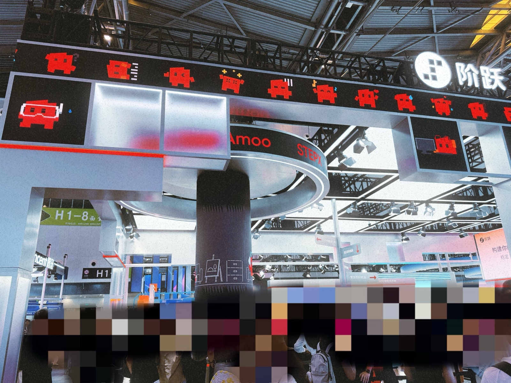
我找了一个工作人员：
「你们有没有觉得这个吉祥物和 Clawd 很像？」
对方睁大了双眼，眼神澄澈：「没有啊。」
意料之外的回答，令我也瞪大双眼：「嗯…你是真心这么觉得，还是培训话术？」
「真心这么觉得。」
「没人这么说？」
「对，你是第一个。」
我们始终带着礼貌笑容，面面相觑。
Clawd 是 Claude Code 的 ASCII 吉祥物，大约最早在 2025 年 2 月出现。同年 9 月，Thariq 发推表示它叫 Clawd。
问完这个问题，有点不好意思在阶跃的展区里走。但，来都来了。
STEPX Neo 的展台被安全线围着。我在圈外，镇馆之宝在圈里。
排队似乎暂时截止了，工作人员正在向一个客人介绍实机。我探着头去看，一个好心的工作人员就着视频，帮我讲解（无实机版）。
他说，手机计划下半年面市，和豆包手机助手不同，模型、操作系统、终端全部自己做。
「那怎么解决 App 的问题，和阿里系、字节系这些有合作吗？有广告吗？」
「有合作，没有广告」。
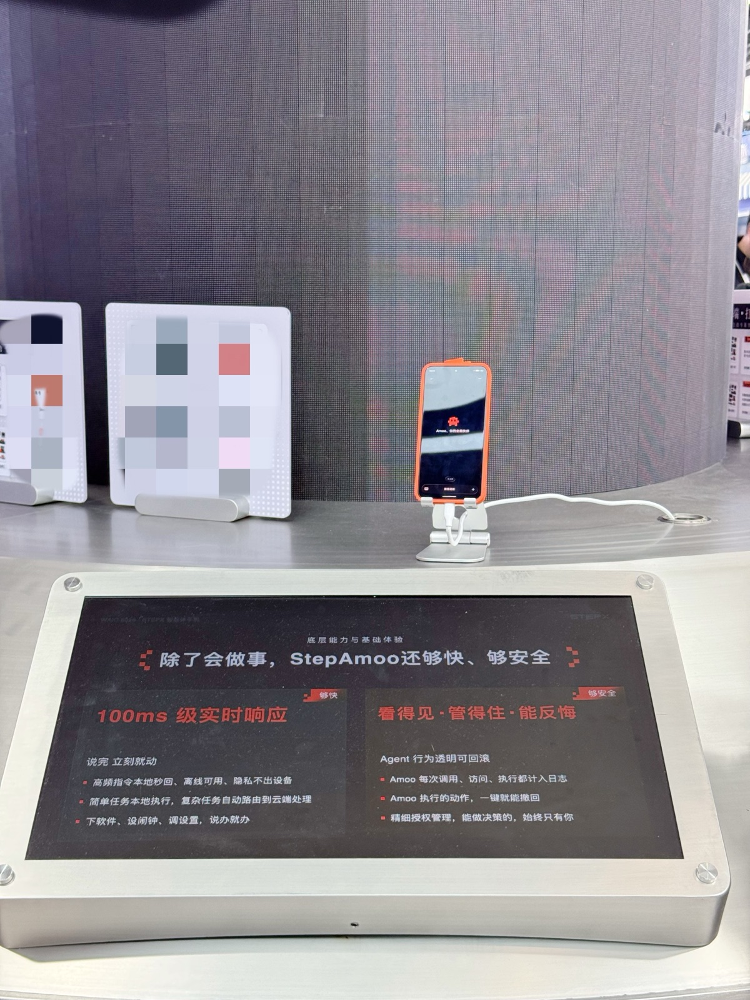
STEPX Neo 的基本逻辑是用户与 Agent 对话、发起任务，也不需要遵循「人用 App」的方式操作屏幕。但 App 仍然在系统里保留，以备人类用户所需。
「所以距离正式发布，目前还差什么，卡点主要在…技术？生态？市场？」对方回答，主要有一系列审批合规相关的流程。
这句话里可以吸收的部分是，卡点确实不在技术。
次日，我又去了阶跃展台（为了学习，绝非挑衅）。
关于也许会在下半年发布的语音全双工交互模型，展台算法老师的讲解专业清晰，演示没翻车，也直面了同类竞品例如 GPT-Live 的对比问题，直接把吉祥物掉的好感拉了回来。
最后我又不死心：「老师，你们用 Codex 或 Claude Code 吗？」
「用的。」
「有没有觉得这个吉祥物像 Clawd？内部技术同学看到这个不『暴动』吗？」
「我们也觉得像，但是…这就不太好回答了。」
其实这问题多余问了。
从元素构成到动画呈现，它模仿到了不需要解释就知道在模仿谁的程度。
不可能是「撞 idea」，也不可能是供应商「过度借鉴」而甲方未能识别。为什么一家追寻星辰大海的模型创业公司，会选择给新品牌赋予这样一个吉祥物形象？
从头创造需要时间和创意，可能没有辨识度。
而只要和热门 IP 制造足够高的相似度，踩在模仿与抄袭的临界线上，就能以低成本引爆话题。
很难接受，这样的坏方法如今依旧奏效。
我对阶跃的印象变得割裂。
一边是张祥雨、朱亦博这样的顶级科学家和工程专家；一边是「山寨」Clawd。
也许 C 端开发者的好感，对于现阶段主打「多模态模型+终端智能」的阶跃来说，也并不重要。
今年 6 月，曾有新闻称阶跃计划将在今年年底港股上市。我才想起，还有过「模型六小虎」这样的称号。
智谱、阶跃星辰、MiniMax、月之暗面、百川智能、零一万物，不知道当年谁排第六个——「六小虎」大约是第六名攒的。总之如今，零一万物放弃了万亿参数的模型训练；百川「All in 医疗」；智谱市值一度冲破万亿港币；MiniMax 闫俊杰写了全员信，实现 AGI 之前，他不再领取薪酬。
这两年的月之暗面，在参展这件事情上，像是完成「出现」的任务。
2026 年的展位面积，并没比 2025 大多少。几块屏幕播放着 Kimi K3 宣传片和 showcase，场内一台用于体验的电脑都没有——即便现在除了 Kimi App，他们还有 Kimi Code 和 Kimi Work。
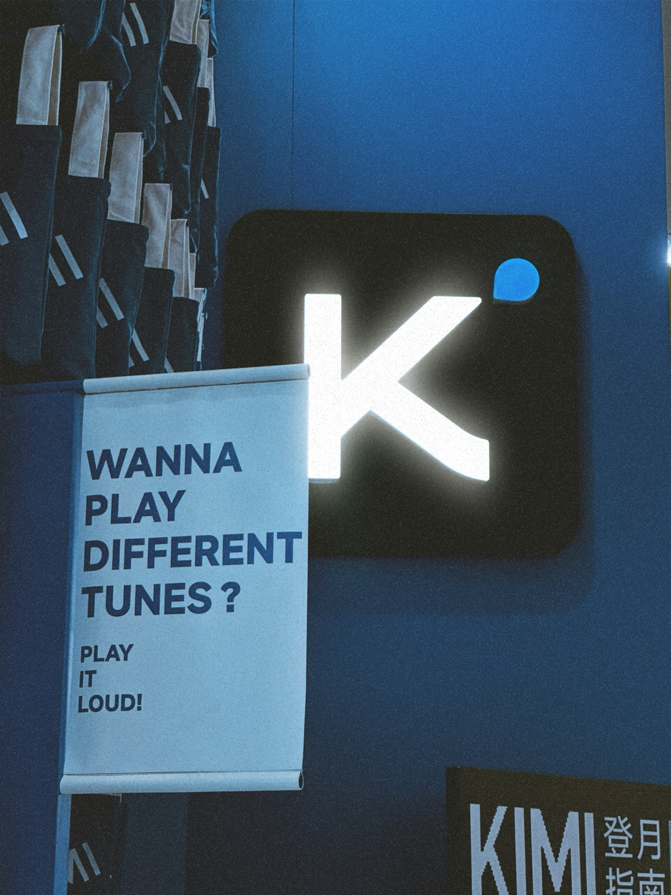
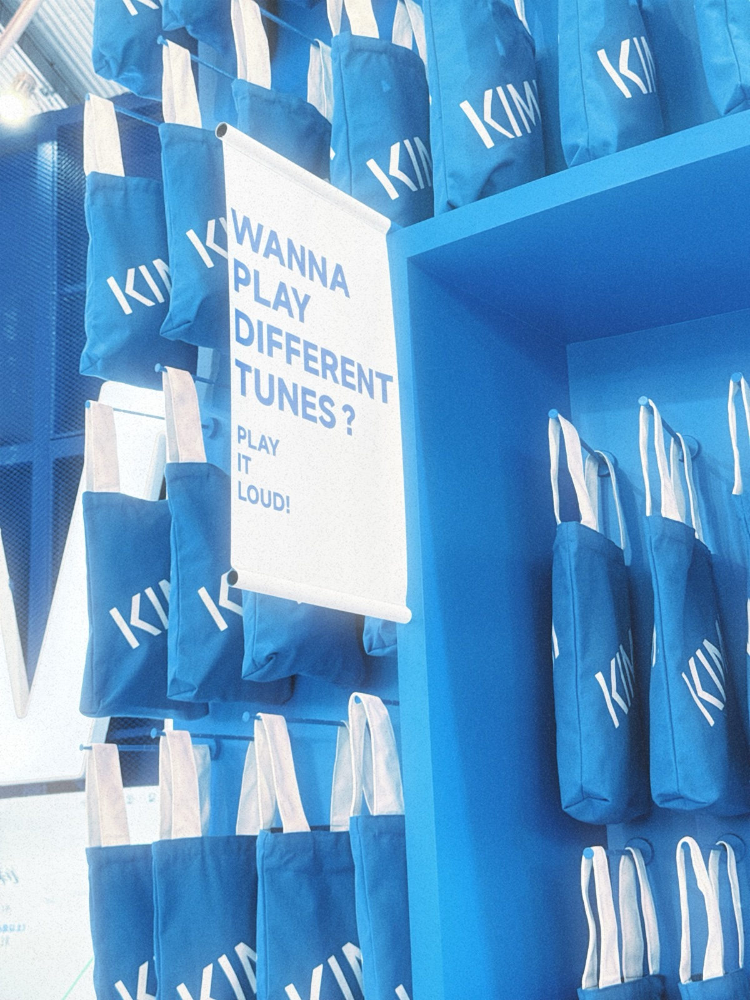
不能说「敷衍」。展区设计保持着 Kimi 式的审美，简洁克制，点缀一点点趣味。但他们只是支了摊，淡淡地在那里，聊着自己的天。因为属于月之暗面的狂欢，已经从 WAIC 前夕开启。
7 月 16 日，大约是晚上？Kimi K3 上线了。
Kimi 官方的介绍里写：2.8 万亿参数，原生支持视觉理解，100 万 token 上下文窗口，开源。
其实 K3 发布之前，推特上有人说，「江湖人称小 Fable」，也有人说「平替 Opus 4.8」。放出这种风声，大胆和莽撞之间只有一线，期待越高，失望越大，骂名越多。
结果，还好。我和摸鱼群的群佬们尝试各自的 case，一直玩到两三点。
博客和 Benchmark 过了几小时才更新，最后这一句据说是杨植麟自己写的：
Despite being a highly competitive model overall, K3 nonetheless exhibits a noticeable gap in user experience compared with Claude Fable 5 and GPT 5.6 Sol.（K3 在用户体验上与 Fable 5、GPT 5.6 Sol 仍有明显差距。）
不过有没有 Benchmark，对于开发者来说，现在也没那么重要。
WAIC 7 月 17 日正式开幕，而 K3 变成了 AI 圈子的头条。Kimi 只在展位设置了一个打卡抽奖的小活动，就小排长队。连续几日才下午 3 点，互动活动就已结束。
对于模型厂商来说，智能就是一切。
更何况这样的智能，我们今天可以如此轻易获得。
大厂
阿里摆出了模型、应用、算力、硬件，Qwen 系列模型只是叙事的一部分；今年的腾讯则专注在智能体。
我找到 WorkBuddy 的工作人员，想听他讲讲「国内 AI 办公智能体行业第一」的来龙去脉。
没想到他开朗地说，「我们内部也有很多竞品的，比如 Qclaw、WorkBuddy，还有 Marvis。」
Qclaw、WorkBuddy 的展示区紧紧相连。我问，「那之后会合并吗？」没说出口的是，像 QoderWork、MuleRun、悟空那样。
「嗯…目前没有，因为主打的是不同场景。你是哪种场景？」
我答个人创作者，「个人用户的话，推荐去看看 Marvis。」
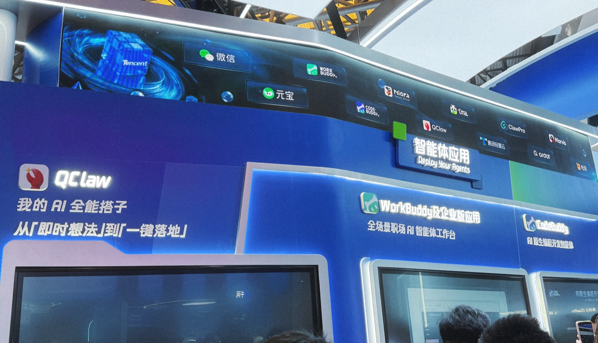
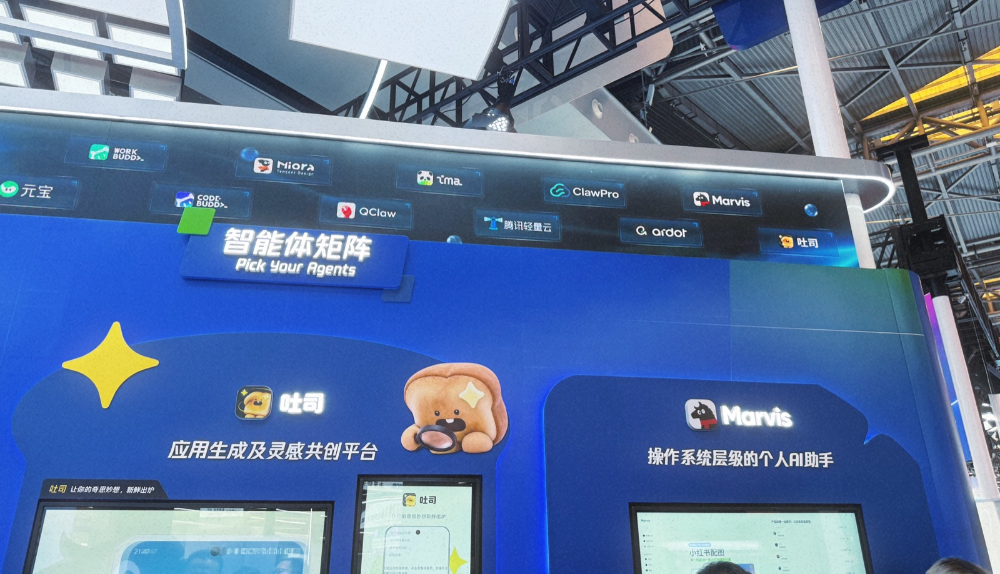
这是我第一次听说 Marvis，一只看起来有点潦草的卡通黑马形象，脖子上戴着 QQ 同款围巾。屏幕上的几只 Marvis Agent 在工作、犯困、打游戏、如厕，动画很可爱，但就像给数字员工发工牌一样，传播目的太明显，给人一种「不本质」的感觉。
Marvis 的工作人员和 WorkBuddy 的工作人员一样热情，为我展示了各种 case。只是如果用户已经在用 Codex 这类产品，在我的猜想中，好像不应该是 Marvis 的目标用户，因为 Coding Agent 都能做。
对方很坦诚，「其实大家都是通用 Agent，只是针对不同场景有不同的主打方向。」
「那 Marvis 主打什么？」
「系统级控制电脑，和本地文件整理生成。」
「啊？AI 时代的电脑管家？」
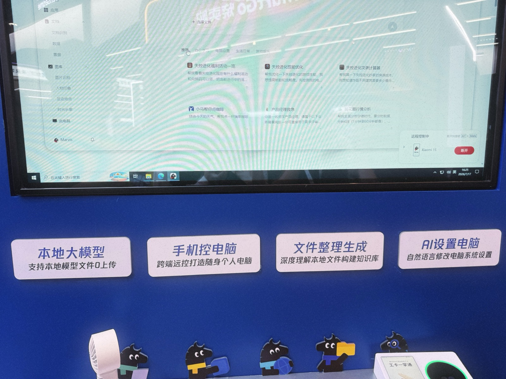
后来发现，官方对 Marvis 的定位是「操作系统级 AI 助手」。「操作系统级」太难懂了，能力确实如展台工作人员所说，主打电脑操控、文件管理等日常任务，比如帮你找到一张「穿着红色衣服、吃冰激凌」的照片。
2026 已过半，个人 Agent 真的不新鲜。100% 对标的产品或许没有，但业内有太多 Agent，能力拼拼装装，完全不需要再来一个 Marvis。
可腾讯有它的用户基础和产品基因。在非开发者、非企业协同赛道，谁也不敢小看腾讯。
下午快 6 点，临近 Day1 尾声，腾讯的工作人员齐聚在展区前方拍合照，站着、蹲着，紧紧地挤在一起，手里拿着各种各样的展示牌和吉祥物，笑容满面。
「Hey，AI Buddy！」
口号大约响起了两三遍。
阿里的展台就在腾讯对面。身着千问 T 恤的工作人员默默看着。「好有活力呀」，他们轻声发出感慨。
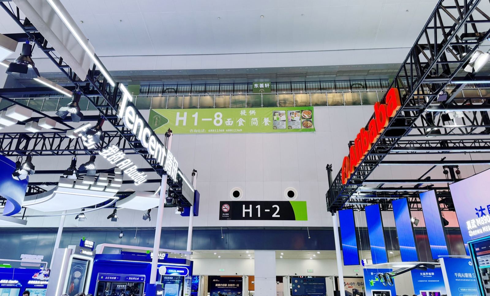
2030
这一年的 WAIC，还是有不少具身厂商选择零售类的场景，iPad 点击下单，机器人取货。
为什么这种场景要「人形」？
不知道。
但哪怕看到机器人拿起滴管，手滑，滴管摔落，看到机器人捏小狗气球，因为人类打气太满，捏到一半，气球炸了…这些似乎都比固定位置的零售取货，离智能更近一些。
傅利叶的 GR-3 又来了。这是一款外观设计亲和、独特、有记忆点的人形机器人。它去年坐在沙发上，今年和一台更小尺寸的 GR-3 一起，仍然坐在沙发上。
确实有两台人形机器人站在圈定好的场地里，准备行走，但任务预设了，定位贴了，演示还是不太流畅。
同系列的 Nano 倒也可爱，穿了各式各样款式的娃衣，放在一格一格的布景中。晃一晃它，它就生气，摸一摸头，它就星星眼。
可这只是陪伴，更像是具身公司常做的「沿途下蛋」，下了个挺大的鸵鸟蛋。
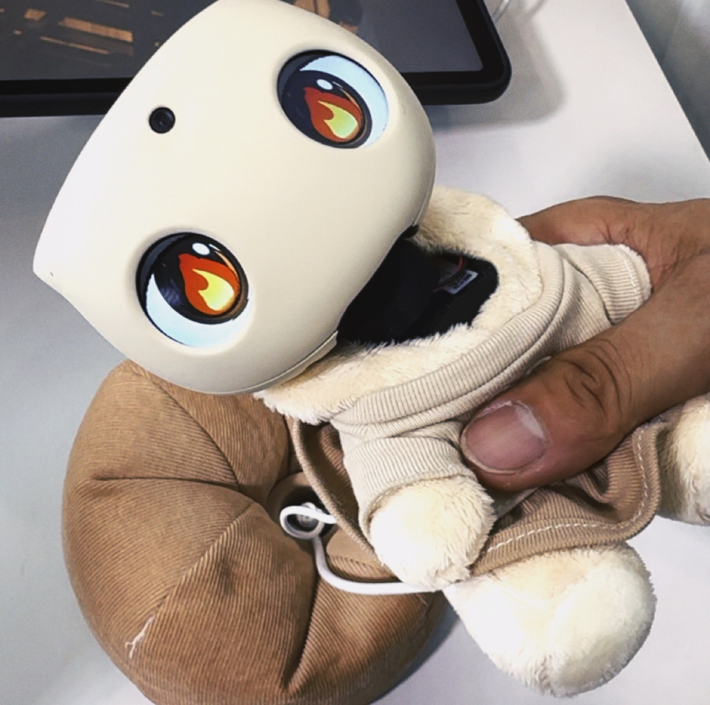
Physical Intelligence 在去年 11 月 π 0.6 的报告中，展示过「用真实经验做强化学习，在一个新家叠 50 件训练时没见过的衣物，数小时连续作业」，衣物类型有 T 恤、衬衫、长裤、小物。
但在 WAIC 整个 H3 展馆，没能看到可以匹敌的演示。
有的因为机器过热休息中，有的只能慢慢地叠 T 恤，无法处理分拣，需要人类把 T 恤一件一件放过去。听同去的朋友说，租金一个月几千块，已有客户「激情下单」。
至于 cafe3310 一直执着的「换被套」问题，可以请 Gemini 或 Kimi DeepResearch 一下，会有更充分的阶段性进展和难点挑战说明。
也有不错的 case，比如星动纪元。
「能帮我们演示一下吗？」工作人员站起身来，直接打开两台机器，一台穿鞋带，一台给快递箱贴胶带。
贴胶带的任务完成度给个「NPC」，封箱带不够服帖，大概还没到快递站，胶带就会起翘；穿鞋带则完成不错，过程中我把鞋子挪来挪去，把鞋带穿到其他位置，机器能重新定位，继续完成任务。（这只鞋看起来挺大一只，鞋面比较硬挺，大概是比较好操作的类型。）
又如今年年初就以灵巧手大火的 Sharpa。
Sharpa 在 WAIC 只设了一个小小的互动区：一个机器人与你合影，一个机器人为你拍照，重点在拍照。
一台市售相机挂在机器人脖子上，它一手抬起相机，一手按键，拍完以后，相机吐出一张拍立得，机器人用手指拿住相纸，递给你。
工作人员解释，有视觉辅助，但主要是力的感知。
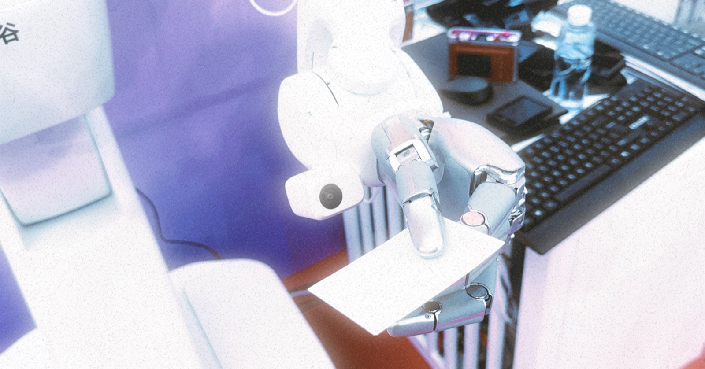
「2030。」
具身领域创业者们回答问题时，常常提到这个数字——计划中，机器人开始规模化落地的一年，人形机器人被允许进家庭的一年。
年初看了 CES 的众多演示视频时，我也是这么想的。而在 WAIC 走了一圈，2030 好像并不乐观。只在 Sharpa 机器人递照片的那一下…一开始它好像捏得很紧，但当你试图拿取这张照片，它的手指就松开了。我突然有点恍惚。
视野之外
只要你想，几乎所有信息都可以在互联网获取。所以作为一般路过普通人，逛 WAIC 的一个可行思路是强行打破日常关注圈。
于是我开始「猎奇」。
比如，看到「附身智能」（品牌名为 JoyInside）的那一刻，我觉得我和京东至少有一方在搞抽象。
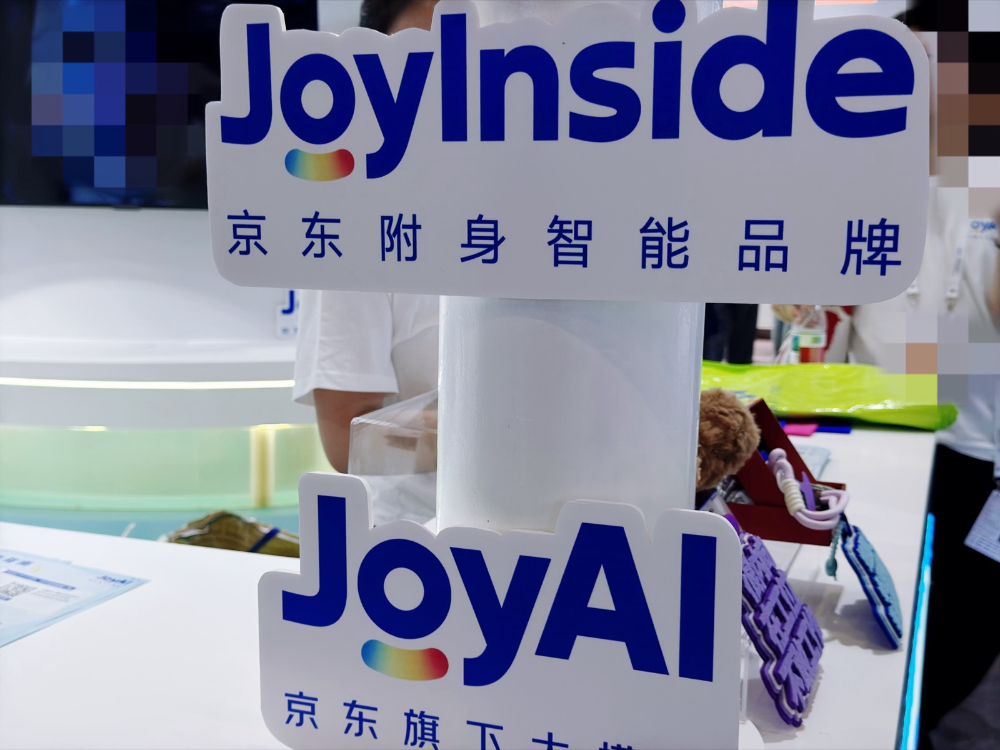
比如，脑电玩《黑神话悟空》。
其实 2024 年 11 月，岩思类脑就在 B 站发过视频，用户佩戴非侵入式脑电设备，完成连招。
玩游戏是个场景，但不是目的。工作人员直言，单论这套脑电系统，距离面市，技术和市场都是问题，还有很多需要迭代的地方。理想状态下，这些技术可以服务身体有障碍的患者。
他们服务过一位先天性脑瘫患者，这位用户很喜欢下象棋，喜欢到用鼻尖触碰手机下象棋，坚持十多年。后来用脑电设备，无需标定训练，就可以在象棋平台和人对弈。
我回来查，这是去年 12 月的事。
许多真实问题正在发生，其中有些始终存在，不会因为大模型来了而被自然解决。
主航道之外的 AI 创业，有时是因为「AI 可以」，有时是因为「像门生意」，也有时是因为「有人需要」。
大模型能力外溢，最终会吞噬一切，但模型厂商不会做所有事。它们留下了一些高处的果实，让那些既耐心又专业的少数派去摘。
无论如何，我们期待的，是难题被解决，而不是把已经完成的事重做一遍。
现实世界
WAIC 结束，说是回到「现实世界」也并不准确。
全馆有几百台真机展出。舞台上的机器人可以给台下的人类观众饭撒，杂货铺的机器人可以慢慢腾挪、拿一瓶自动贩卖机十秒就能出货的饮料。
而场馆里出现的垃圾，还是需要人类回收。
展馆里随机刷新名人，比如在零一万物，我听见李开复老师中气十足的声音。
观众们举着手机拍摄，而我几乎看不到被围在里面的是真人还是硅基。毕竟，我们身处 WAIC 这样的地方。
许多机器人挂上了「休息中」的牌子。路过一个展位，看到工作人员拿宣传页猛扇。
「老师你在给机器散热吗？」
他停顿了几秒，笑了，「主要是在给我自己散热。」
发完小红书和朋友圈，拍照打卡的新鲜感很快过去。脑力劳动者即将回归工位，在有冰咖啡的空调房，继续计算 AI 提效的比例，给「数字员工」发入职工牌和离职证明。
室外热浪滚滚。
这是人与机器都无法承受的酷暑。
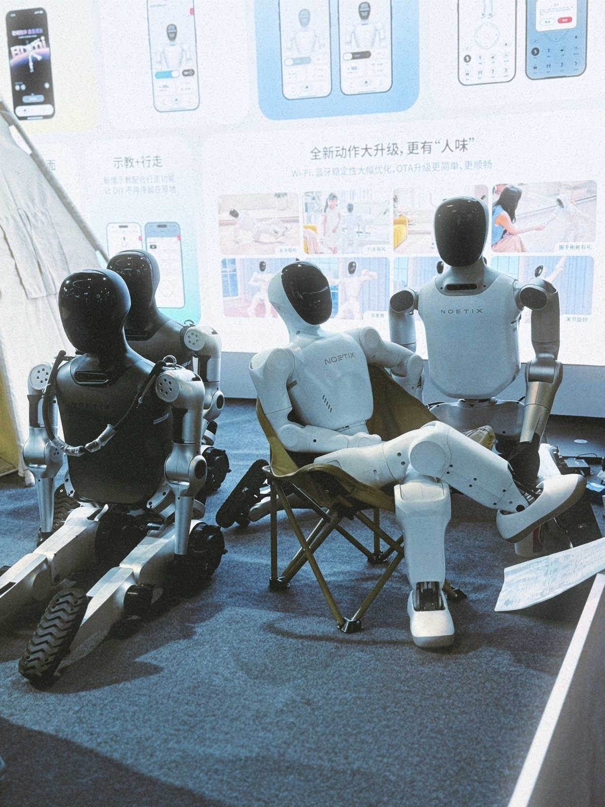
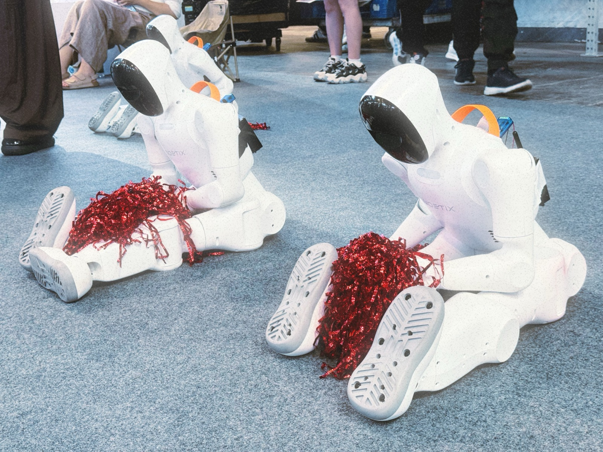
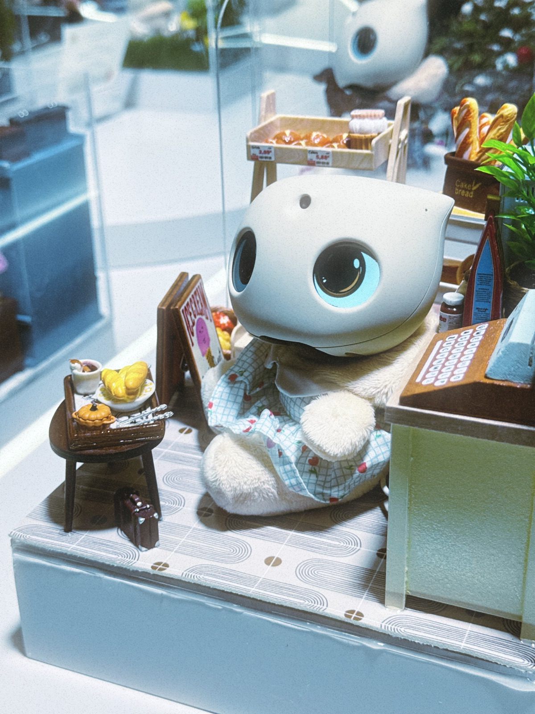
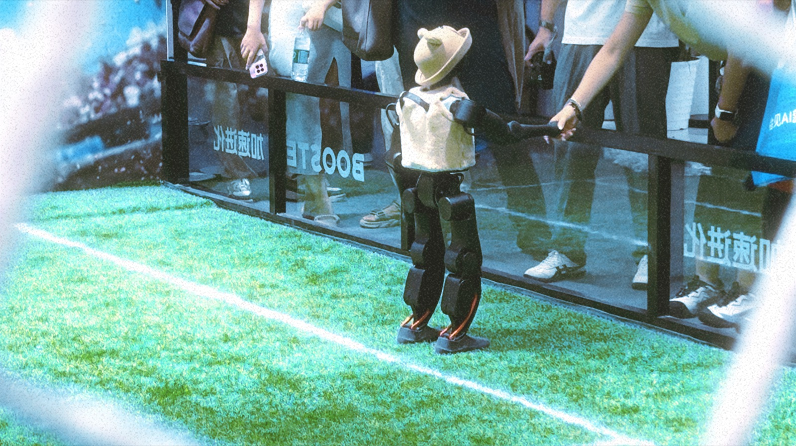